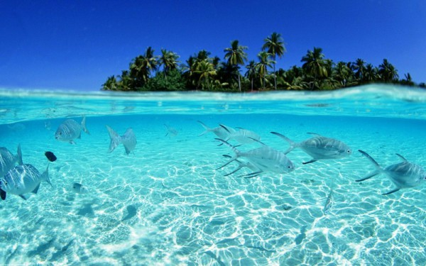
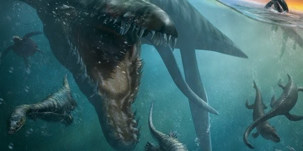
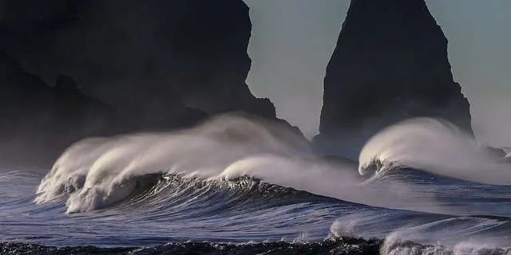
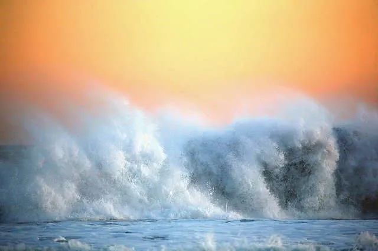

Зміст:
Чому океан назвали Тихим?
Свою назву Тихий океан отримав від мореплавця Магеллана. Під час подорожі хвилями цього океану йому пощастило не помітити ані високих хвиль, ані штормів, ані інших неприємних для корабля явищ.
Таким чином Магеллан перетнув Тихий океан за 3 місяці і 20 днів. І весь цей час води були більш-менш спокійними. Це був один з рідкісних періодів, на які рибалкам доводиться довго чекати.
Спочатку Тихий океан називався «Південне море». Ім’я йому дав мореплавець Васко Нуньєс де Бальбоа. Мандрівник шукав найпівденнішу державу, якала мала б вихід до моря. Разом з командою він перетнув Панамський перешийок в найвужчому місці і таким чином потрапив до вод Тихого океану. Мореплавець одразу заявив, що водойма належить королівству Іспанія. Але він навіть не міг припустити, що потрапив у води найвеличнішого океану на планеті.
Історія Тихого Океану
Тихий океан виник ще понад 750 мільйонів років тому. Він утворився в результаті розпаду стародавнього континенту Родинія. Спочатку на Землі був тільки один величезний океан Міровія. Потім в результаті природних явищ і впливу різних чинників суша поступово розділилася , виникли нові материки і океани. Офіційно Тихий океан був відкритий для Старого Світу на початку XVI століття.
Цікаві факти Тихого Океану
Тихий океан – найбільше на Землі водоймище. На його частку припадає майже 50% Світового океану. Площа океану більша за розміри всієї суші, яка є на нашій планеті.
У Тихому океані знаходиться найбільша кількість островів. Всього в ньому близько 20 000 островів різного розміру. Деякі з них час від часу повністю ховаються під воду. У Тихому океані можна зустріти близько половини всіх живих істот, що живуть у Світовому океані. Кількість представників флори і фауни в кілька разів більша, ніж у всіх інших океанах. В першу чергу це пов’язано з розмірами Тихого океану і його розташуванням. Він розміщений відразу в декількох кліматичних зонах . Крім того, в Тихий океан потрапляє значна кількість прісної води.
У Тихому океані розташована величезна кількість вулканів. Більшість з них – діючі. Тому до 90% землетрусів відбуваються в цій місцевості. Більшість з них – відчутні та можуть бути небезпечними. Землетруси сприяють виникненню цунамі. Висота хвиль досягає 60 метрів. Швидкість руху хвиль може сягати 900 кілометрів на годину. Цунамі мають величезну силу і енергію.
Тихий океан найбільш забруднений океан світу. Понад 20 років тому в ньому виявили так звану «Велику тихоокеанську сміттєву пляму». Вона утворена переважно з пластикових елементів. Тільки 1/5 сміття з’явилася там в результаті скидання відходів з морських суден. Основна маса була змита з суші. Пляма утворена з приблизно 100 мільйонів тонн відходів.
У Тихому океані живуть найбільші на Землі молюски, з яких витягують найбільші перлини. Розмір однієї раковини може досягати 200 сантиметрів, вага – до 300 кілограмів.
Найбільший на Землі кораловий риф розташований в Тихому океані. Це Великий Бар’єрний риф. Найбільші припливи виникають в Тихому океані. Перепади рівня води подекуди досягають 9 метрів.
Найглибше місце на нашій планеті – Маріанська западина, знаходиться в Тихому океані. Її дно знаходиться на 11 000 метрів нижче рівня моря. Також в океані існує ще кілька западин, глибина яких досягає 10 000 метрів. Незважаючи на велику глибину, у впадинах живуть різні істоти. На думку вчених, в цих місцях можуть зберегтися давні види, яких немає більше ніде.
У різних місцях тихого океану склад води значно відрізняється. У середніх широтах вона набагато більш солона, ніж в області екватора. Це зумовлено значною кількістю опадів. Тихий океан багатий не тільки на тваринний світ, але і на природні ресурси. У ньому знаходиться близько 40% світових запасів нафти і газу. При цьому більшість родовищ навіть не розвідані.
Середня глибина Тихого океану складає близько 4300 метрів
У південній частині Тихого океану на дні знаходиться справжнє кладовище кораблів. Правда, не морських, а космічних. Саме в цій місцевості найчастіше затоплюються подібні об’єкти.
На півдні майже відсутні судноплавні маршрути. Тому ймовірність попадання космічного об’єкта в морське судно – мінімальна.
У Тихому океані є високі гірські хребти і вершини. Однак, вони повністю сховані під водою. Всього в океані близько 10 000 піків. Частина з них мають вулканічну природу.
У Тихому океані розташований величезний хребет – Імператорські гори.
У Тихому океані були знайдені водорості, довжина яких перевищує 200 метрів.
Понад 90% різновидів лососевих риб живе в Тихому океані. Однак виловлювання таких риб обмежене на законодавчому рівні. Тому, що чимало видів знаходяться на межі вимирання.
У Тихому океані можна зустріти понад 1 000 різновидів ракоподібних. До їхнього числа входять створіння справді величезних розмірів. Наприклад, японський краб-павук може рости до 3,8 м у розмаху ніг.
На початку минулого століття дном Тихого океану був прокладений кабель, довжина якого близько 13 тисяч кілометрів. Це перший такий комунікаційний кабель, призначений на передачі повідомлень.
Тихий океан омиває берегову лінію 43 країн. Деякі з них – острівні.
На дно Маріанської западини люди спускалися тільки 3 рази. Одним із сміливців виявився відомий режисер – Джеймс Кемерон.
Плавучі сміттєві острови в Тихому океані утворюються в результаті кругових течій, яких багато в океані.
Тихий океан є найтеплішим з усіх існуючих.
У Тихому океані велика кількість течій . Вони іноді навіть перетинаються. Це призводить до курйозних ситуацій. Наприклад, в кінці минулого століття в океані затонуло вантажне судно. Воно потрапило в сильний шторм . Корабель був завантажений іграшками. В результаті аварії пластикові вироби прибило до берегів Гаваїв, Японії і навіть Аляски. Відстань між іграшками складала тисячі кілометрів.
Тихий океан – одне з улюблених місць серферів. Спортсмени обирають його через високі хвилі. Штиль в Тихому океані скоріше рідкісне явище, аніж тривалий стан.